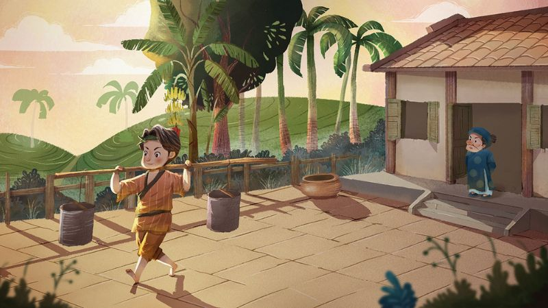
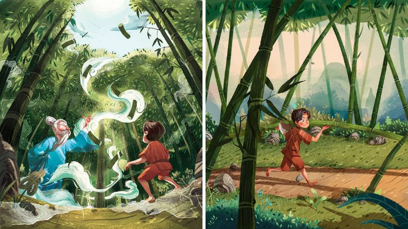
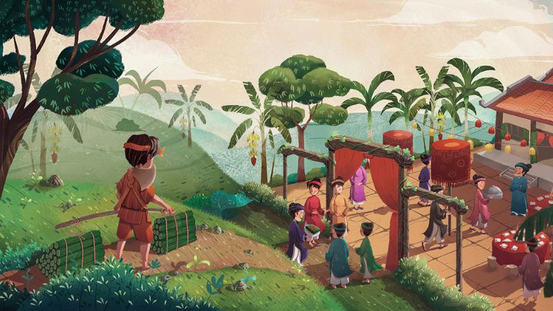
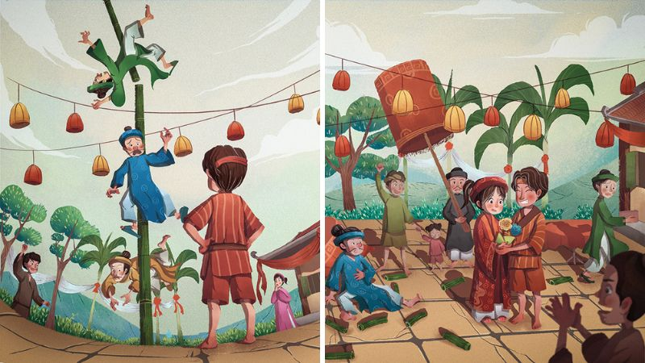

TRUYỆN CỔ TÍCH: "CÂY TRE TRĂM ĐỐT"
Ngày đăng: 19/05/2024
Ngày xửa ngày xưa, có một chàng trai nông thôn hiền lành, khỏe mạnh tên là Khoai đi cày thuê, cuốc mướn cho vợ chồng ông phú hộ. Hai người này vì muốn lợi dụng chàng trai, làm việc khỏi trả tiền nên đã hứa: "Mày chịu khó làm lụng cho ta, ba năm nữa tao sẽ gả đứa con gái xinh đẹp của tao cho”.
Không nghi ngờ gì, anh chàng ra sức làm việc không quản khó nhọc. Thế nhưng, ba năm sau, ông phú hộ không còn nghĩ gì đến lời hứa khi xưa nữa, ông trở mặt, định đem gả con gái cho một phú hộ giàu có khác ở trong làng.

Ông ra điều kiện với chàng trai rằng: “Mày muốn lấy con gái của tao thì phải lên rừng, tìm ngay cho tao một cây tre có trăm đốt để làm nhà cưới vợ, thì tao mới gả con gái tao cho mày”.
Vì tình yêu, anh chàng đành nghe theo lời ông phú hộ, vác dao đi rừng, quyết tâm tìm được một cây tre trăm đốt. Tìm hoài, tìm mãi chẳng ra, anh chàng tủi thân ngồi ôm mặt khóc. Bỗng có một ông lão râu tóc bạc phơ, tay cầm gậy trúc, nét mặt hiền hòa, hiện ra hỏi: “Tại sao con khóc?”.
Anh chàng đem kể đầu đuôi sự tình cho ông cụ nghe, ông nghe xong, bảo anh rằng: “Con hãy đi chặt cho đủ 100 đốt tre rời rồi đọc câu thần chú Khắc nhập, khắc nhập đủ ba lần thì một trăm khúc tre sẽ tự động kết nối với nhau thành một cây tre đủ trăm đốt”.

Làm theo lời ông lão dặn, ngay lập tức một cây tre trăm đốt hiện ra trước mắt anh. Mừng rỡ quá, anh định vác cây tre về, nhưng vì vướng víu quá nên không mang đi được. Ông lão liền bảo anh hãy đọc: “Khắc xuất, khắc xuất đúng ba lần thì cây tre trăm đốt sẽ tách ra thành từng khúc như ban đầu”.

Chàng trai bó các khúc tre lại, gánh về nhà. Đến nơi thấy hai họ đang ăn uống vui vẻ, chuẩn bị rước dâu, anh chàng mới hay rằng mình đã bị lừa.

Anh không nói gì, đợi đến lúc nhà trai đốt pháo cưới, anh đem một trăm khúc tre xếp dài dưới đất, rồi lẩm bẩm đọc: “Khắc nhập, khắc nhập” bỗng hóa ra một cây tre trăm đốt, anh chàng gọi ông phú hộ đến bảo là đã tìm ra được và đòi gả con gái cho anh.
Không tin vào mắt mình, ông phú hộ sờ tay vào cây đếm từng khúc tre. Anh chàng đọc luôn: “Khắc nhập, khắc nhập”, thế là ông ta bị hút dính luôn vào cây tre.
Thấy vậy, ông phú hộ sợ quá nên đồng ý giữ lời hứa gả con gái cho, anh bèn đọc: “Khắc xuất, khắc xuất” để giải thoát cho cha vợ của mình. Cuối cùng, anh nông dân và con gái ông phú hộ sống với nhau hạnh phúc trọn đời.

Truyện cổ tích Cây tre trăm đốt là một câu chuyện rất hay và răn dạy chúng ta những đạo lý làm người bổ ích trong cuộc sống. Đó là nếu chúng ta là người hiền lành, lương thiện thì dù có gặp bao nhiêu khó khăn, trắc trở đến mấy thì vẫn sẽ luôn có người giúp đỡ, chở che. Bên cạnh đó, chúng ta phải biết phân biệt đúng sai, kẻ xấu, người tốt trong cuộc sống. Chúng ta phải có lý tưởng cho riêng mình, phải biết đấu tranh cho sự công bằng, lẽ phải, đứng về phía người tốt, bênh vực kẻ yếu là việc làm đúng đắn nhất.